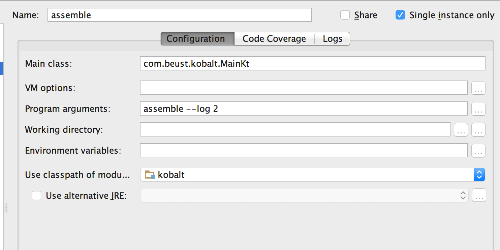
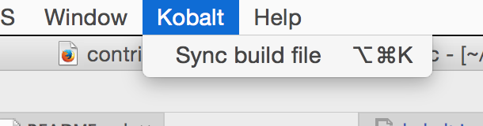
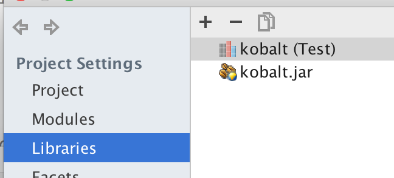
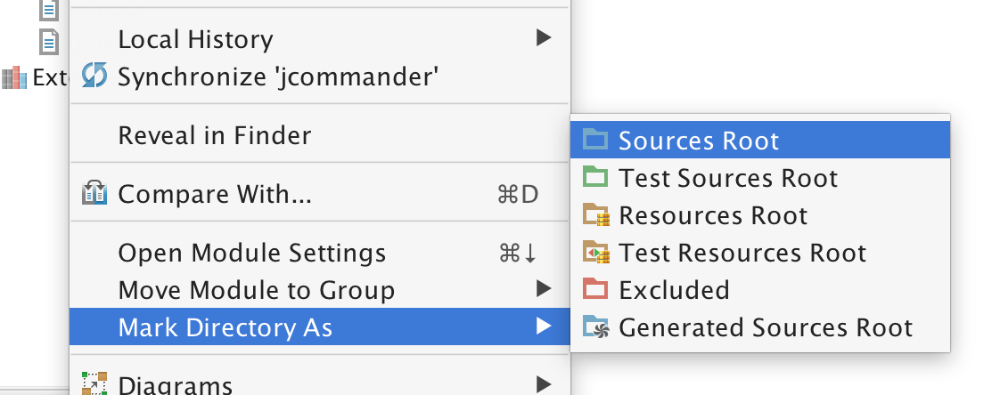
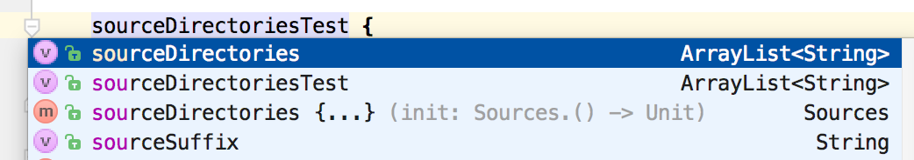

Interested in contributing to Kobalt? This page explains how to configure your development environment.
Kobalt's main class is com.beust.kobalt.MainKt. Here is a typical launch configuration:

A few observations:
--dev, which will add the class
name and thread information to each log line.
It's useful to turn on auto completion for your Build.kt file if you are adding new
elements to the DSL. You can achieve this in two steps.
This is achieved with the Kobalt / Sync build file menu item. On top of configuring your
IDEA project with the correct dependencies, this will also add the kobalt.jar file to your
classpath.


Next, mark the directory that contains your build file as a "Source directory":

Build.ktBuild.kt is in the root directory of your project but
you can also put it in kobalt/src/Build.kt and then mark that directory as
a source directory.
You can now use all the IDEA features on your build file:
